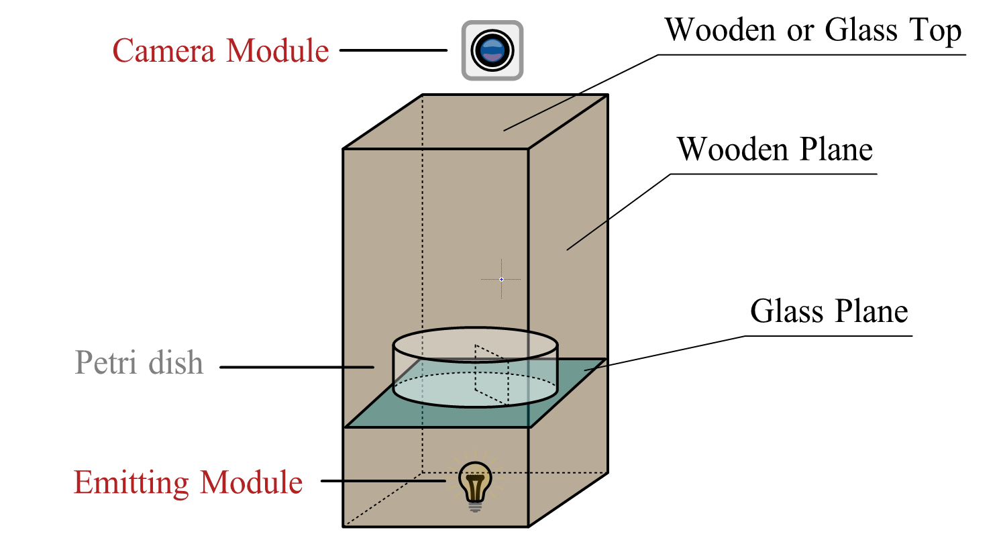
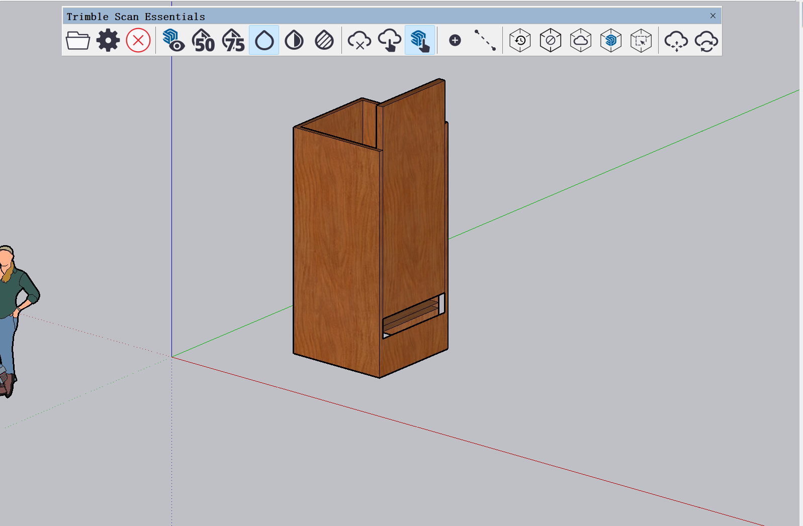
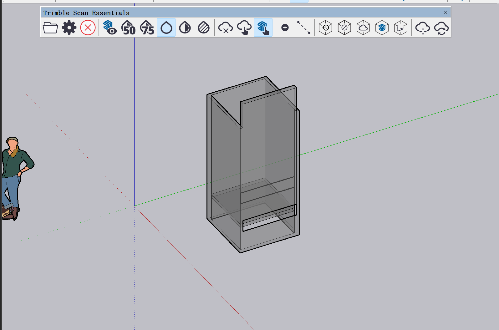
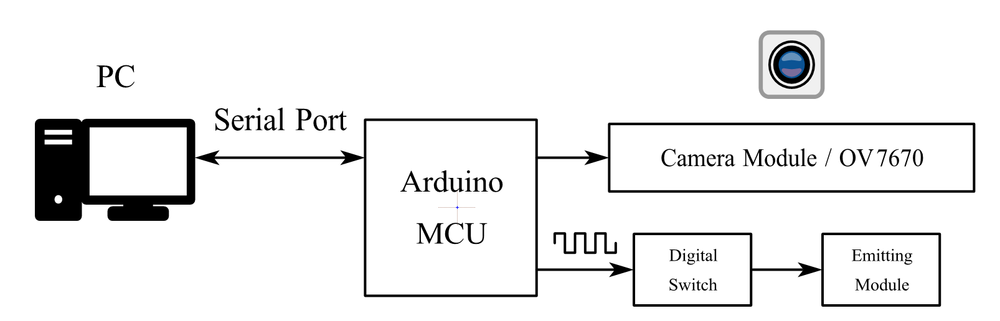
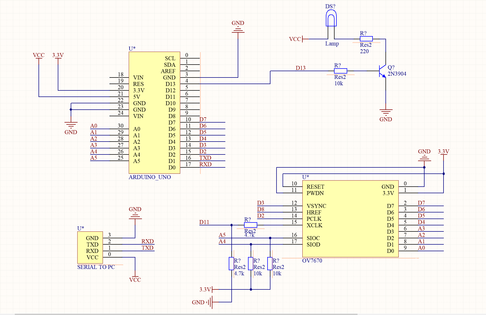
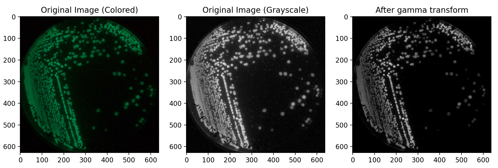

<!DOCTYPE html>
<html lang="en">

<head>
    <meta charset="UTF-8" />
    <meta name="viewport" content="width=device-width, initial-scale=1.0" />
    <!-- 引入css -->
    <link rel="stylesheet" href="css/style.css" />
    <link rel="stylesheet" href="icon/menu/iconfont.css">
    <link href="css/layui.css" rel="stylesheet">
    <script src="js/jquery.js"></script>
    <script src="https://cdnjs.cloudflare.com/ajax/libs/mathjax/2.7.5/MathJax.js?config=TeX-AMS_HTML" async></script>
    <script type="text/x-mathjax-config;executed=true">
        window.MathJax.Hub.Config({
            showProcessingMessages: false, //关闭js加载过程信息
            messageStyle: "none", //不显示信息
            jax: ["input/TeX", "output/HTML-CSS"],
            tex2jax: {
                inlineMath: [["$", "$"], ["\\(", "\\)"]], //行内公式选择符
                displayMath: [["$$", "$$"], ["\[", "\]"]], //段内公式选择符
                skipTags: ["script", "noscript", "style", "textarea", "pre", "code", "a"] //避开某些标签
            },
            "HTML-CSS": {
                availableFonts: ["STIX", "TeX"], //可选字体
                showMathMenu: false //关闭右击菜单显示
            }
        });
        //下面第三个参数可以不写，默认对整个html内的latex进行翻译
        window.MathJax.Hub.Queue(["Typeset", MathJax.Hub,document.getElementsByClassName("ck-content")]);
    </script>
    <script src="js/layui.js"></script>
    <script>
        layui.use(function () {
            // code
            layui.code({
                elem: '.code-demo'
            });
        })
    </script>
    <title>Hardware</title>
</head>
<style>
    @font-face {
        font-family: "Moon";
        src: url("font/MoonTypeFreeDemo-gwjr5.otf");
    }

    @font-face {
        font-family: "Milane";
        src: url("font/MilanelloFree-51Lwv.otf");
    }

    @font-face {
        font-family: "Tirto";
        src: url("font/TirtoWritterRegular-Eajrl.ttf");
    }

    @font-face {
        font-family: 'iconfont';
        src: url('iconfont.ttf?t=1708579574327') format('truetype');
    }

    .title {
        color: #546ca4;
        right: 10%;
        position: absolute;
        top: 38%;
        font-size: 120px;
        font-family: "Milane";
        text-align: right;
    }

    .quote {
        display: flex;
        flex-direction: row;
        /* justify-content: space-between; */
        margin: 0px;
    }

    .line {
        width: 5px;
        background-color: #adbef9;
        margin: 0px;
    }

    .text a {
        color: #546ca4;
    }
</style>

<body>
    <div class="BOX">
        <div class="TOP">
            <div>
                <p class="Level_1_heading">Project</p>
                <a href="safety.html" class="Secondary_headings">Safety</a>
                <a href="design.html" class="Secondary_headings">Design</a>
                <a href="implementation.html" class="Secondary_headings">Implementation</a>
            </div>
            <div>
                <p class="Level_1_heading">Wet Lab</p>
                <a href="protocol.html" class="Secondary_headings">Protocol</a>
                <a href="engineering.html" class="Secondary_headings">Engineering</a>
                <a href="Parts.html" class="Secondary_headings">Parts</a>
            </div>
            <div>
                <p class="Level_1_heading">Dry Lab</p>
                <a href="hardware.html" class="Secondary_headings">Hardware</a>
                <a href="software.html" class="Secondary_headings">Software</a>
                <a href="Model.html" class="Secondary_headings">Model</a>
            </div>
            <div>
                <p class="Level_1_heading">HP</p>
                <a href="intergrated HP.html" class="Secondary_headings">Intergrated HP</a>
                <a href="education.html" class="Secondary_headings">Education</a>
                <a href="entrepreneurship.html" class="Secondary_headings">Entrepreneurship</a>
                <a href="overview.html" class="Secondary_headings">Overview</a>
            </div>
            <div>
                <p class="Level_1_heading">Team</p>
                <a href="member.html" class="Secondary_headings">Member</a>
                <a href="attributions.html" class="Secondary_headings">Attributions</a>
            </div>
        </div>
        <div class="top">
            
            <div class="caidan"></div>
        </div>
        <div class="banner" style="background-color: aliceblue;background-image: none;">
            <h1 class="title">Hardware</h1>
        </div>
        <div class="box">
            <div class="menu">
                <div class="blank"></div>
                <div class="nav">
                    <a href="#tit_1" class="Level_1_heading scroll">Build of Hardware System</a>
                    <a href="#tit_2" class="Secondary_headings scroll">Appearance</a><br>
                    <a href="#tit_3" class="Secondary_headings scroll">Circuit Design</a>
                    <a href="#tit_4" class="Level_1_heading scroll">Software Introduction</a>
                    <a href="#tit_5" class="Secondary_headings scroll">Image Processing</a>
                    <a href="#tit_6" class="Secondary_headings scroll">Algorithm Example: Estimate the Area of
                        Fluorescence</a>
                    <a href="#tit_7" class="Level_1_heading scroll">Conclusion</a>
                    <div class="animation"></div>
                </div>
            </div>
            <div class="text" style="position: relative;">
                <div class="cover" style="width: 100%; height: 70px; position: sticky; top: 0%;"></div>
                <div>
                    <p>
                        In order to test the antimicrobial effect of the developed antimicrobial peptides, it is
                        necessary to
                        design biological experiments to evaluate the antimicrobial effects of antimicrobial peptides.
                        Although we can inject Staphylococcus aureus into the intestines of experimental animals (such
                        as mice, etc.), and inject drugs into mice, and observe the health status of mice, etc., the
                        process
                        is troublesome to do a large number of biological experiments, and due to some differences
                        between the internal environment of the human intestine and the intestinal tract of mice, the
                        experimental results obtained by using mice cannot well simulate the therapeutic effect of drugs
                        in the human intestine. In order to solve this problem, we decided to use stem cell induction
                        method to construct a simulated human intestinal environment, in which drug experiments can
                        be conducted. In order to reduce the need for subsequent manual experiments to evaluate the
                        antimicrobial effect, we designed an electronic measurement system to roughly estimate the
                        distribution of colonies in each part of the Petri dish by the size of the colonies and the use
                        of
                        fluorescently labeled antimicrobial peptide images, so as to roughly assess the antimicrobial
                        effect of the drug.
                    </p>
                    <p>
                        In order to evaluate the antimicrobial effect of the drug, we hope that the drug can attach to
                        the
                        gastrointestinal mucosa to fully carry out various biochemical reactions; It is hoped that the
                        antimicrobial effect of the drug can be roughly evaluated by measuring the relationship between
                        the concentration of Staphylococcus aureus and the change of the drug before and after
                        administration with time
                    </p>
                </div>
                <div>
                    <h1 id="tit_1" class="page">Build of Hardware System</h1>
                    <h2 id="tit_2" class="page">Appearance</h2>
                    <p>
                        To implement calculating the distribution on various parts inside the petri dish by using colony
                        distribution image, an acquisition of image is required. For this, we designed a mini test
                        chambers which the size can contain a petri dish. Furthermore, a camera module, which can
                        fetch image data, connect to PC and can be controlled via microcontroller, is installed on the
                        top
                        of chamber.
                        <br>This hardware design is inspired by the project described in this page:
                        <a
                            href="https://2022.igem.wiki/insa-lyon1/hardware">(https://2022.igem.wiki/insa-lyon1/hardware)</a>
                    </p>
                    <p>
                        The main structure is similar to the project inside the link. Nowadays, there is a team in iGEM
                        designed a mini test chamber that fetches the colony distribution image by recording
                        fluorescence information inside the petri dish. After fetching, the image data can be processed
                        and analyzed by using PC.
                    </p>
                    <p>
                        Our electronic measuring system is a enhanced version of the project inside the link. We hope
                        that our enhanced hardware can fetch the image not only in the dark but also in the light.
                        Furthermore, we designed a sample algorithm to process colony distribution image by using
                        digital image processing (DIP) technology, as an attachment of this hardware design.
                        <br>The following is the sketch of the mini test chamber:
                    </p>
                    <div class="center">
                        
                    </div>
                    <div>
                        <p>· Outside: Surrounded by wooden planes. The top is wooden or glass, and there is a joint to
                            connect camera module.</p>
                        <div>
                            <p>
                                · Wooden top: Isolate ambient light for measuring the distribution of colonies by using
                                fluorescence in the dark.
                                <br>· Glass top: The light enters the test chamber from the top, for measurement of
                                colonied
                                that is colored or has a high contrast on the incubation medium.
                            </p>
                        </div>
                        <p>
                            · Inside: A glass plane is placed to place the petri dish.
                            <br>· Camera Module: Fetching the distribution of colonies.
                            <br>· Emitting Module: A light source controlled by a digital switch. Emits light of a
                            specific
                            wavelength to excite the fluorescence protein.
                        </p>
                    </div>
                    <p>
                        The following is the 3-D model of hardware appearance made by SketchUp. There is a placket in
                        a side for facilitating the place of petri dish. The top model was not modelled.
                    </p>
                    <div class="center">
                        
                    </div>
                    <p>
                        The following is the perspective structure of 3-D model. A glass plane is placed to place the
                        petri
                        dish.
                    </p>
                    <div class="center">
                        
                    </div>
                </div>
                <div>
                    <h2 id="tit_3" class="page">Circuit Design</h2>
                    <p>
                        We designed a circuit to drive the camera and emitting module. The following is the block
                        diagram of hardware circuit:
                    </p>
                    <div class="center">
                        
                    </div>
                    <div>
                        <p>
                            · Microcontroller Unit (MCU): The core of circuit. Arduino series MCU is selected, because
                            the
                            <br>· programming of Arduino series MCU is simple, and there are a large number of
                            opensourced
                            library to drive various peripherals, and has a short developing period and high
                            efficiency.
                            <br>· Camera Module: Using OV7670 Camera Module. It has a small size, simple structure, and
                            open-sourced driver code, which does not occupy the serial port.
                            <br>· Emitting Module: The core of this module is a lamp that emits light of a specific
                            wavelength.
                            This module can be controlled by the digital pulse from MCU.
                            <br>· PC: Processes the image information from MCU serial port.
                        </p>
                    </div>
                    <p>
                        The following is the schematic diagram of the circuit:
                    </p>
                    <div class="center">
                        
                    </div>
                </div>
                <div>
                    <h1 id="tit_4" class="page">Software Introduction</h1>
                    <p>
                        After building the hardware system, the image from hardware system can be processed by PC
                        now. We provided an algorithm based on DIP and breadth-first search (BFS). It calculates the
                        ratio the area occupied by the colonies on the petri dish in a specific time approximately,
                        based
                        on the color of colonies or the excited fluorescence protein inside the bacteria itself. Based
                        on
                        this data, the survival of colonies can be tracked. Furthermore, the effect of the medicine can
                        be
                        evaluated approximately.
                    </p>
                    <h2 id="tit_5" class="page">Image Processing</h2>
                    <p>
                        To suppress the influence of various errors, the image from MCU may be preprocessed. The
                        following is a possible approach for processing and its implementation (in Python):
                    </p>
                    <div>
                        <p>
                            · Convert the image from the MCU (possibly in color) to 256-level grayscale image to reduce
                            the amount of computations;
                            <br>· Save the grayscale image data in a file.
                        </p>
                    </div>
                    <pre class="layui-code code-demo" lay-options="{}" style="font-size:16px ;line-height: 20px;">
from PIL import Image
from numpy import *
from matplotlib.pyplot import *
def imageProcessing():
    # Read the image and convert it to an grayscale image
    img = Image.open("sample.png").convert("L")
    img_arr = array(img)                            
    # Save the grayscale image data
    savetxt("processed_img.txt", img_arr, fmt="%3d", delimiter=" ")                    
    # plot the grayscale image (optional)
    figure()
    imshow(img_arr, cmap="gray")
    show()                
    return img_arr
                    </pre>
                    <p>
                        In this example, our goal is to calculate fluorescence distribute area, and assuming that the
                        image is acquired in the dark.
                    </p>
                    <p>
                        In an ideal case, place where has no fluorescence should be completely black, or the grayscale
                        of
                        there should be zero. However, during the analysis, the grayscale value where it looks like no
                        fluorescence is a small value (about 0 ~ 10). To suppress the influence of these value, apply
                        the
                        Gamma Transform as the equation below:
                    </p>
                    $$g(x,y)=c * f(x, y) ^ {\gamma}$$
                    <p>Where</p>
                    <p>· \(g(x,y)\)、\(f(x,y)\) : The grayscale after and before the transform in location \((x, y)\).
                        The
                        grayscale is between 0 and 1.
                        <br>· \(c\): An scale factor that can be customized.
                        <br>· \(\gamma\): Gamma factor that can be customized too. Changing this factor may affect the
                        transformation result significantly. Especially,
                        <br>· \(\gamma > 1\): Will suppress the low-value grayscale,
                        <br>· \(\gamma < 1\): Will amplify the low-value grayscale.</p>
                            <pre class="layui-code code-demo" lay-options="{}"
                                style="font-size:16px ;line-height: 20px;">
def gammaTransform(img, c: float, gamma: float):
    for i in range(len(img)):
        for j in range(len(img[0])):
                # Convert the grayscale value to range between 0 and 1
            img[i][j] = c * pow(img[i][j] / 255, gamma) * 255
         return img
                        </pre>
                            <p>The following are the original colored image, original grayscale image and the image
                                after Gamma Transform with \(c=1,\gamma=1.8\):</p>
                            <p>
                                Due to the lack of related experiment, the image is from the links below for the
                                convenience to
                                describe the algorithm:
                                <br><a
                                    href="https://2022.igem.wiki/insa-lyon1/hardware">(https://2022.igem.wiki/insa-lyon1/hardware)</a>
                            </p>
                            <div class="center">
                                
                            </div>
                </div>
                <div>
                    <br>
                    <h2 id="tit_6" class="page">Algorithm Example: Estimate the Area of Fluorescence</h2>
                    <p>
                        After processing the image, the algorithm based on BFS can be applied to estimate the area of
                        fluorescence:</p>
                    <p>
                        · After processing, the following is how image may looks like (just a sketch):
                    </p>
                    <div class="center">
                        
                    </div>
                    <p>
                        · To estimate the area of fluorescence in the petri dish, we can calculate the amount of light
                        pixel (for example, grayscale > 10), which corresponding to where the colonies locate.
                        <br>· Enumerate all pixels. if the grayscale of a pixel is greater than 10, that means it may be
                        a
                        part of colony. Find the pixels near it and mark them as searched. After an enumeration, an
                        area can be calculated.
                        <br>· Repeat the steps below until every pixels are enumerated.
                    </p>
                    <p>
                        The following is the implementation of this algorithm (in Python):
                    </p>
                    <pre class="layui-code code-demo" lay-options="{}" style="font-size:16px ;line-height: 20px;">
import numpy as np
# An approach to find the covered area by using breadth-first
search(BFS) algorithm
def findArea(map, size_x:int, size_y:int, start_x:int, start_y:int):
    # directions for searching the neighbor of a specified point
    directions = [
        Point(1, 0),
        Point(0, 1),
        Point(-1, 0),
        Point(0, -1)
    ]
    # whether the point has enqueued or not
    isEnqueued = np.zeros((size_x, size_y), dtype=bool)
    # build and initialize a queue for BFS algorithm
    points = Queue()
    points.enqueue(Point(start_x, start_y))
    isEnqueued[start_x][start_y] = True
    # results of area calculation
    result = 0
    while not points.isEmpty():
    point = points.dequeue()
    result += 1
    isEnqueued[point.getX()][point.getY()] = True
    # find appropriate parts of area and add them to query queue
    # and check whether the next point is inside the image
    for direction in directions:
        new_x = point.getX() + direction.getX()
        new_y = point.getY() + direction.getY()
        if (0 <= new_x and new_x < size_x) and (0 <= new_y and
new_y < size_y):
            if not isEnqueued[new_x][new_y] and map[new_x][new_y] >
0:
                isEnqueued[new_x][new_y] = True
                points.enqueue(Point(new_x, new_y))
    return result, isEnqueued
def main():
    # load the processed images data from the specified file.
    # the data will be a matrix, where each element is the gray scale
of the
    # original image, and so on.
    map = np.loadtxt(" processed_img.txt" ,dtype=int)
    size_x = len(map) # the number of lines in the image
    size_y = len(map[0]) # the number of columns in the image
    # whether the point has enqueued or not
    isEnqueued = np.zeros((size_x, size_y), dtype=bool)
    result = 0
    # find all possible areas inside the image
    for i in range(0, size_x):
        for j in range(0, size_y):
            if map[i][j] > 0 and (not isEnqueued[i][j]):
                tmp_result, isEnqueued = findArea(map, size_x, size_y,
i, j)
                result = result + tmp_result
    print(result)
if __name__ == ' __main__' :
    main()
            </pre>
                    <p>
                        Where Point is a class to store the location of pixels, and class Queue implements the queue
                        data structure:
                    </p>
                    <pre class="layui-code code-demo" lay-options="{}" style="font-size:16px ;line-height: 20px;">
# A class which represents a point in the image
class Point:
    def __init__(self):
        self.x = 0
        self.y = 0
    def __init__(self, x:int, y:int):
        self.x = x
        self.y = y
    # the add operation is overloaded for convenience of calculation
    def __add__(self, other):
        return Point(self.x + other.x, self.y + other.y)
    def getX(self):
        return self.x
    def getY(self):
        return self.y
    def toString(self):
        return " (" + str(self.x) + " , " + str(self.y) + " )"
                                    </pre>
                    <pre class="layui-code code-demo" lay-options="{}" style="font-size:16px ;line-height: 20px;">
# A simple implementation of the queue data structure
class Queue:
    def __init__(self):
        self.items = []
    def enqueue(self, item):
        self.items.append(item)
    def dequeue(self):
        return self.items.pop(0)
    def peek(self):
        return self.items[0]
    def isEmpty(self):
        return len(self.items) == 0
    </pre>
                    <p>
                        To estimate the total concentration of colonies, the algorithm can be improved as:
                    </p>
                    <div>
                        <p>
                            To estimate the total concentration of colonies, the algorithm can be improved as:
                            <br>· Firstly calculate the cross-sectonal area \(S\), and acquire the image resolution
                            \(M\times
                            N\), thus the area of every pixel is \(S_0=\dfrac{S}{M\times N}\)；
                            <br>· Using the hardware to measure the (maximum) grayscale \(G\) by using the excited
                            fluorescence colonies, which concentrate given as \(c\) mol/L;
                            <br>· Using DIP method to transform the grayscale in \([0, G]\) to \([0, 255]\) during the
                            follow-up
                            experiments;
                            <br>· Assuming that the concentrate and the grayscale varies with a linear regularity, or
                            the
                            grayscale \(g(x, y)\) corresponds concentrate \(c\). Thus $$c(x,y)=\frac{G}{255}g(x,y)$$
                            · Finally, modify the area calculating program to estimate the total concentration of
                            colonies.
                            just change <code>result += 1</code>to <code>result += c[x][y]</code> inside the
                            <code>while</code> in the function
                            <code>findArea()</code>.
                        </p>
                    </div>
                </div>
                <div>
                    <h1 id="tit_7" class="page">Conclusion</h1>
                    <p>
                        As an auxiliary biological experiment system, this hardware system can use computer and image
                        processing methods to roughly count the distribution of colonies. In order to count the
                        colonization efficiency of drugs in the intestine, the excitation module of this module can be
                        used
                        to excite the fluorescent protein inside the antimicrobial peptide, and then the colony
                        distribution can be estimated by computer. To evaluate the killing effect of antimicrobial
                        peptides
                        against Staphylococcus aureus, natural light can be used instead of a dark environment, as
                        Staphylococcus aureus is inherently colored, and the same method can be used to estimate
                        colony distribution.
                    </p>
                </div>
            </div>
            <!-- <div class="banner"></div> -->
        </div>
</body>

</html>
<script>
    let items = document.querySelectorAll(".scroll");
    let move = document.querySelector(".animation");
    let last = 0;
    let h1 = 43.5;
    let h2 = 36;
    let h3 = 32.4;

    for (let i = 0; i < items.length; i++) {
        items[i].onclick = function () {
            //   items[last].style.backgroundColor = "rgba(126, 185, 187, 0.5)";
            // items[last].style.color = "#546ca4"
            // this.style.color = "white";
            last = i;
            if (i <= 0) {
                move.style.top = i * h1 + "px";
            }
            if (i > 0 && i <= 1) {
                move.style.top = h1 + "px";
            }
            if (i > 1 && i <= 3) {
                move.style.top = h1 + (i - 1) * h2 + "px";
            }
            if (i > 3 && i <= 4) {
                move.style.top = 2 * h1 + 2 * h2 + "px";
            }
            if (i > 4 && i <= 5) {
                move.style.top = 2 * h1 + 3 * h2 + "px";
            }
            if (i > 5) {
                move.style.top = 2 * h1 + 3 * h2 + 72 + "px";
            }
            move.style.height = 65 + "px";
        };
    }
    move.addEventListener("transitionend", function () {
        move.style.height = "40px";
    });


    let lis = document.querySelectorAll('.page');
    let cover = document.querySelector('.cover');
    let lastPrintedIndex = null;

    window.addEventListener('scroll', function () {
        let coverRect = cover.getBoundingClientRect();
        for (let i = 0; i < lis.length; i++) {
            let pageRect = lis[i].getBoundingClientRect();

            if (pageRect.bottom >= coverRect.top && pageRect.top <= coverRect.bottom && i !== lastPrintedIndex) {
                if (i <= 0) {
                    move.style.top = i * h1 + "px";
                }
                if (i > 0 && i <= 1) {
                    move.style.top = h1 + "px";
                }
                if (i > 1 && i <= 3) {
                    move.style.top = h1 + (i - 1) * h2 + "px";
                }
                if (i > 3 && i <= 4) {
                    move.style.top = 2 * h1 + 2 * h2 + "px";
                }
                if (i > 4 && i <= 5) {
                    move.style.top = 2 * h1 + 3 * h2 + "px";
                }
                if (i > 5) {
                    move.style.top = 2 * h1 + 3 * h2 + 72 + "px";
                }
                move.style.height = 65 + "px";
                move.addEventListener("transitionend", function () {
                    move.style.height = "40px";
                });
                // items[i].style.color = "white";
                // if (i != 0) {
                //     items[i - 1].style.color = "#546ca4";
                //     items[i + 1].style.color = "#546ca4";
                // }
                // if (i == 0) {
                //     items[i + 1].style.color = "#546ca4";
                // }
            }
        }
    });

    $(function () {
        $('.caidan').click(function () {
            $('.TOP').toggleClass('TOP-active')
            $('.caidan').toggleClass('caidan-active')
        })
    })

    $("#iconclick").click(function () {
        location.href = 'index.html'
    })

</script>